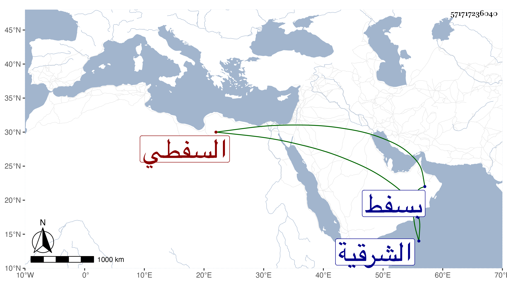

0902Sakhawi.DawLamic.ITO20230111-ara1.EIS1600.571717236040
Biography ID: 571717236040
175
علي نور الدين السفطي . كان يتعانى الشهادة عند الأمراء بل باشر نظم البيمارستان مدة ثم ولي وكالة بيت المال والكسوة مات في سلخ جمادى الآخرة سنة اثنتين وثلاثين وقد جاز الخمسين . ذكره شيخنا في أنبائه والعيني وأرخه في مستهل رجب بالنظر لخروج جنازته وقال أنه كان جيدا مشكور السيرة ولكنه كان عريا عن العلم واستقر بعده في الوكالة الشمس الحلاوي . قلت : وهو ابن محمد بن ثامر القرشي الأموي . ولد بسفط الحنا من الشرقية وكان أبوه خطيبها وحفظ عنده القرآن ثم تحول منها لأخيه شمس الدين محمد وحفظ المنهاج وعرضه على شيوخ عصره ومما باشره الصرغتمشية والحجازية والشهادة بيبرس ، وكان طوالا جدا مع حسن الخط والشكالة والوجاهة بحيث ترشح لكتابة السرفي أيام الأشرف ولما مات قال سميه ابن مفلح : الآن آمنت على وظائفي .
